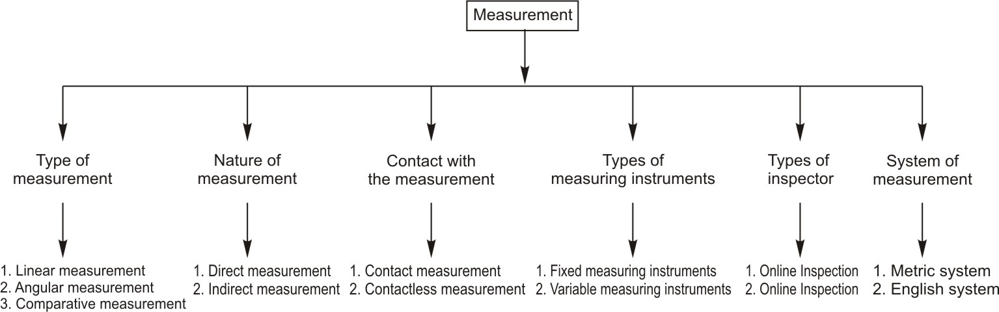

Accurate interpretation and measurement of dimensions are skills that every individual involved in mechanical shop must have. A thorough understanding of units of measure, measurement systems and measurement terms is necessary for proficiency in workshop technology. This chapter presents information on the basics of measurement, measuring tools and layout tools used in the mechanical shops. It outlines the basic knowledge (principles and practice) required in using the most common measuring instruments and layout tools used in mechanical shops.
Before Industrial revolution the craftsman used to make and carry his own tools and measuring gadgets. The manufacture of products was totally dependent on the skill of the craftsman and accuracy of his tools. As a consequence no two identical parts were interchangeable and the standards could not be met in production. Once industrial revolution took place need arose for division of labor, simplification, standardization to enable mass production.
As parts are produced in large quantities according to specifications, interchangeability became the norm of production (Interchangeability is the ability of parts to be substituted for one another without the need for part adjustment during assembly). This motivated the engineers to design various mechanical devices to measure accurately the dimensional features of parts. For example when the transmission shaft of steam engine broke one had to just state the specification along with part number to get a replacement. As the industrialization progressed more complex machinery operating at higher speeds and closer tolerances became the need of production which in turn motivated engineers to design better measuring instruments. Quality became the catchword and users of products became quality conscious.
Need of Measurement and Measuring InstrumentsWhen we talk of the length of an object we mean the distance from one end to the other expressed numerically in convenient units. In order to find the length of certain object, we measure by comparing the object to some other object of standard length that is internationally accepted.
When we produce an object and want to determine its size we cannot in practice compare it to an International Standard of measure. Here comes the need of the measuring instrument with which we can readily measure the size of an object within a desired degree of accuracy which is Internationally accepted.
Without measurements, the quality of products cannot be assessed, therefore, every manufactured product must be measured in some way. Since all manufacturing processes have some inherent variability, manufactured parts must be checked numerically at some point during the manufacturing process, specially on the finished product to determine whether they meet the design specifications (size, volume, density, pressure, heat, impedance, brightness, etc.) including tolerances and surfacefinish.
What is Measurement?
The determination of a dimension of a part through the use of some type of device that permits the magnitude of the dimension to be determined directly, or indirectly, in terms of scalar units is known as measurement.
It is the result of quantitative comparison between a predefined standard and the unknown quantity. There are two basic requirements for measurements.
The majority of measurement techniques can be categorized in following different ways:

1. English System - The English system, also known as British Imperial system, is one of two main measuring systems used in the world today. The common unit of length in the English system is the inch. The inch can be abbreviated as in. It can be divided into common fractional divisions or decimal fractional divisions: for example, 1/2 inch or 0.500 inch. Both mean half an inch. Using the fractional method, sixty-fourth is the smallest fractional size that can be measured accurately by eye.
2. Metric System - The metric system is the dominant language of measurement in use today. It is the measuring system used by most of the world. It is based on a decimal system, in powers of ten. Therefore, it simplifies calculations by using a set of prefixes. The metric system replaces all the traditional units, except the units of time and of angle measure, with units satisfying three conditions:
One of the mathematical advantages of the metric system is its combination of metric terminology with its decimal organization.
The International System of Units (SI)SI stands for Système International d’Unités, i.e. the International System of Units. SI is the abbreviation used in all languages to indicate this system.
Principles of the SI systemThe SI is constructed from seven base units, which are defined in physical terms. By combining these units in accordance with simple geometrical and physical laws, we can arrive at the derived units. For practical reasons, 21 of the derived units have their own names. In principle, the SI covers all application areas. Certain units outside SI are referred to as additional units, of which the most common are degree, minute and second for plane angle, litre for volume, minute, hour and day for time and tonne for mass.
SI Base Units| Basic unit | Length | Mass | Time | Electric current | Amount of substance | Thermodynamic temperature | Luminous intensity |
|---|---|---|---|---|---|---|---|
| Quantity | Meter | Kilogram | Second | Ampere | Mole | Kelvin | Candela |
| SI symbol | m | kg | s | A | mol | K | Cd |
The prefixes that are most important are listed below along with their decimal and exponential equivalents
| Prefix | Numerical Equivalent | Example | |
|---|---|---|---|
| Decimal | Exponential | ||
| Pico | 0.000000000001 | 10-12 | picosecond |
| Nano | 0.000000001 | 10-9 | nanometer (nm) nanosecond (ns) |
| Micro | 0.000001 | 10-6 | micrometer (µm) |
| Milli | 0.001 | 10-3 | millimeter (mm) millisecond (ms) |
| Centi | 0.01 | 10-2 | centimeter (cm) |
| Deci | 0.1 | 10-1 | decimeter (dm) |
| No prefix | 1.0 | 100 | |
| Deka | 10.0 | 101 | Dekameter(Dm) |
| Hecto | 100.0 | 102 | Hectometer(Hm) |
| Kilo | 1000 | 103 | kilometer (km) kilogram (kg) |
| Mega | 1,000,000 | 106 | megavolt (MV) megapascal (MPa) |
| Giga | 1,000,000,000 | 109 | gigapascal (GPa) |
Metrology
Metrology is the science of measurements such as length, thickness, diameter, angle, flatness, straightness, roundness, profiles, and surface roughness.
Calibration
A fundamental concept in quality assurance is the calibration of measuring instruments. Calibration is a word, which is sometimes misunderstood. Calibration of an instrument means determining by how much the instrument reading is in error by checking it against a measurement standard of known error.
A calibration is thus not usually associated with approval. It "only" gives information about the error of the equipment with respect to an accepted reference value. As a consequence, it is up to the user to decide whether the equipment is sufficiently good to perform a certain measurement. One possibility is to have the instrument certified. We can always offer good advice if needed.
Inspection
Inspection involves measurement, investigation or testing of one or more characteristics of a product, and includes a comparison of the results with specified requirements in order to determine whether the requirements have been fulfilled.
Gauging
The process of determining whether the dimensions of a part are larger or smaller than some established standard, or standards, by direct or indirect methods. It determines conformance of part feature without providing numerical value.
Measurand
Particular quantity subject to measurement is known as measurand.
Measurable quantity
Attribute of a phenomenon, body or substance that may be distinguished qualitatively and determined quantitatively.
Error
"Error" does not mean "mistake". If you have made a mistake, you redo the measurement. "Error" and "uncertainty" are scientific measurement synonyms. Error of a measuring instrument is the indication of a measuring instrument minus a 'true' value of the corresponding input quantity, i.e. it has a sign.
Uncertainty
Uncertainty of measurement is a parameter, associated with the result of a measurement that characterizes the dispersion of the values that could reasonably be attributed to the measurand. It can also be expressed as an estimate characterizing the range of values within which the true value of a measurand lies.
Basic dimension
The ideal value of a dimension according to designer, from which variations are tolerated.
Tolerances
The amount of variation in basic dimension that is tolerated without impairing the functional fitness of design part. Necessary and permissible deviation from a desired dimension because no part can be produced exactly to a specified dimension economically.
Limits
The maximum and minimum dimensions defining the boundaries of the tolerance zone.
Clearance
The difference in size between mating parts when the male part is smaller than the inner dimension of female part.
Interference
The difference in size between mating parts when size of male part is greater then the corresponding internal dimension of the female part.
Allowance
The specified difference between mating parts necessary to secure a specific class of fit. The intentional, desired difference (minimum clearance or maximum interference) between the dimensions of two mating parts.
Accuracy (Correctness)
The closeness of agreement between a test result and the accepted reference value.
Measurement always involves uncertainty. Accuracy and precision are two concepts, which convey the degree of certainty to which a measurement is known. Accuracy conveys how well a given measurement agrees with an accepted or true value. The accuracy of a measurement may be indicated by absolute error or relative error.
More precisely accuracy is the indication of how close a reading is to the true size of the part being measured. It deals with a number of measurements that confirm to standard. Normally in a workshop the terms precision and accuracy are used interchangeably.
Precision (number of significant figures)
Precision is a description of the agreement of a set of measures taken in the same manner. It is the indication of the repeatability by which a dimension can be gauged or measured. This refers to the degree of exactness. The precision of a measurement can be expressed using absolute deviation, relative deviation, significant figures, or tolerance. The precision of a measurement should always correspond to the precision of the equipment used to take the measurement. Ideally, the engineer strives to make measurements that have a high degree of accuracy and precision. Any measurement made to degree finer than one-sixty-fourth (1/64) of an inch or one half millimeter can be considered a precision measurement.
Repeatability
Precision under repeatability conditions. Whereas repeatability conditions are where independent test results are obtained with the same method on identical test items in the same laboratory by the same operator using the same equipment within short intervals of time.
Reproducibility
Precision under reproducibility conditions. Wheras, reproducibility conditions are where test results are obtained with the same method on identical test items in different laboratories with different operators using different equipment.
Stability
Stability refers to the ability of a measuring instrument to maintain constant its metrological characteristics with time.
Traceability
Traceability means that a measured result can be related to stated references, usually national or international standards, through an unbroken chain of comparisons, all having stated uncertainties.
Resolution (Sensitivity)
Sensitivity is the smallest difference in dimensions that an instrument can detect (the smallest marked increment on the instrument).
Trueness
The closeness of agreement between the average value obtained from a large series of test results and an accepted reference value. The measure of trueness is usually expressed in terms of bias.
Range
The range determines the maximum and minimum dimension, which can be measured by a particular instrument.
Least count
The least count is the smallest division that is marked on the instrument.
In every measurement there are four primary conditions that must be controlled:
The higher the degree of accuracy required, the more attention should be paid in controlling the four conditions.